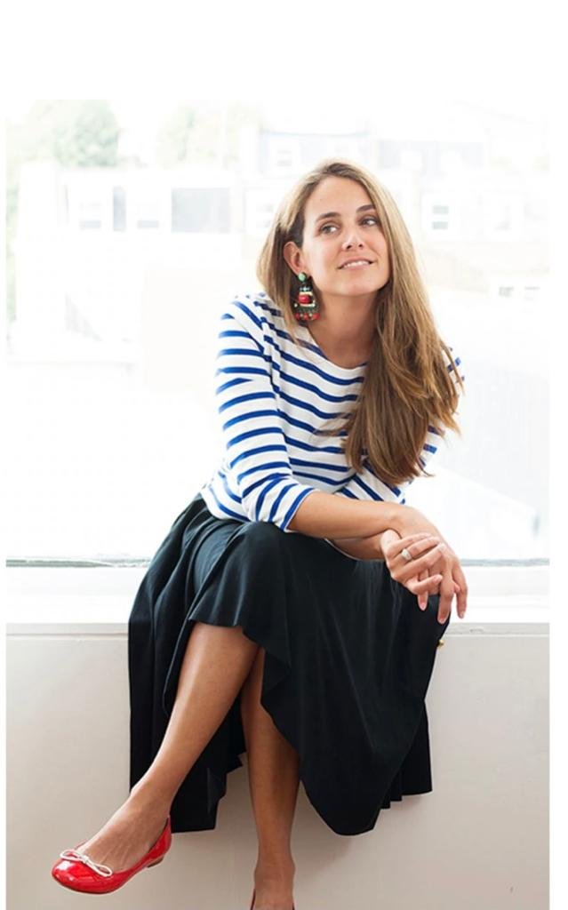
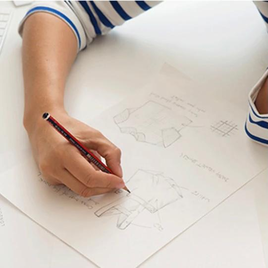
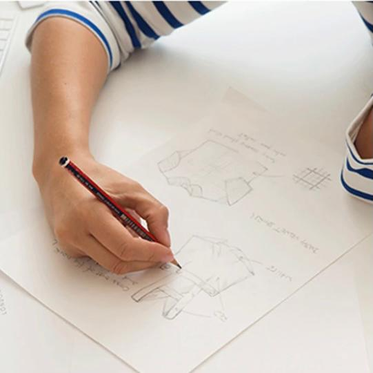

Our Story
After three exciting years living in London, in 2013 Pepa Gonzalez decided to create Pepa & Co., to bring back classic and quality clothes to a new generation of children. From her years working as a nanny for international families in London, Pepa spotted a gap in the market for high-quality children’s clothing with a traditional and smart design. Since then Pepa & Co. has become a recognised worldwide brand, known for its beautifully designed, clothing collections for newborns, babies, and children, up to 10 years old. Pepa & Co. is a London based brand, whose clothing is made in Spain using the highest quality materials. Their manufacturing processes are closely monitored to ensure all clothing is being produced in a fair and ethical way.
 
